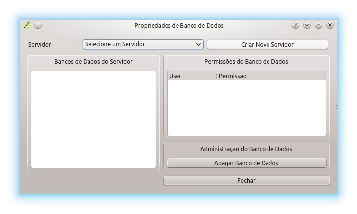
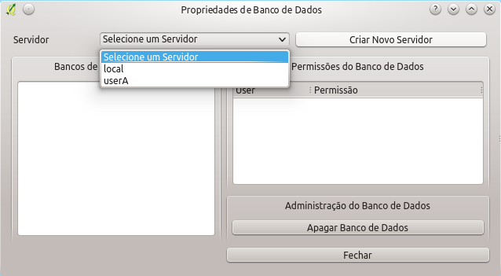
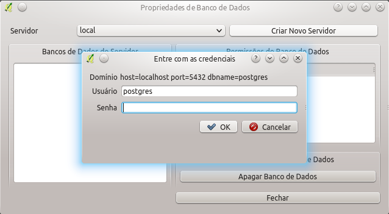
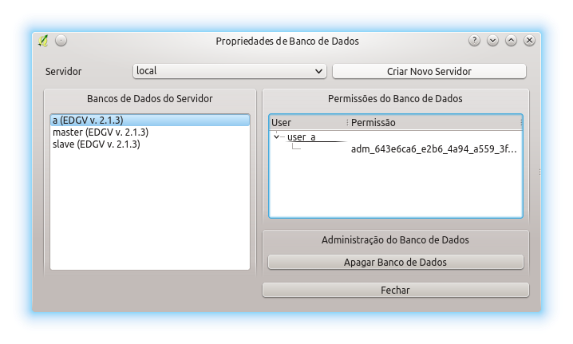
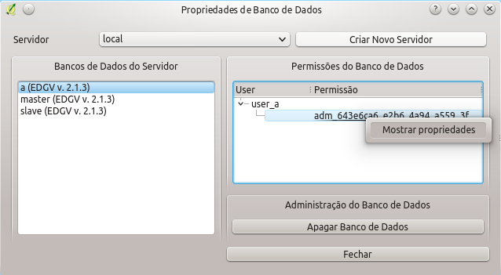
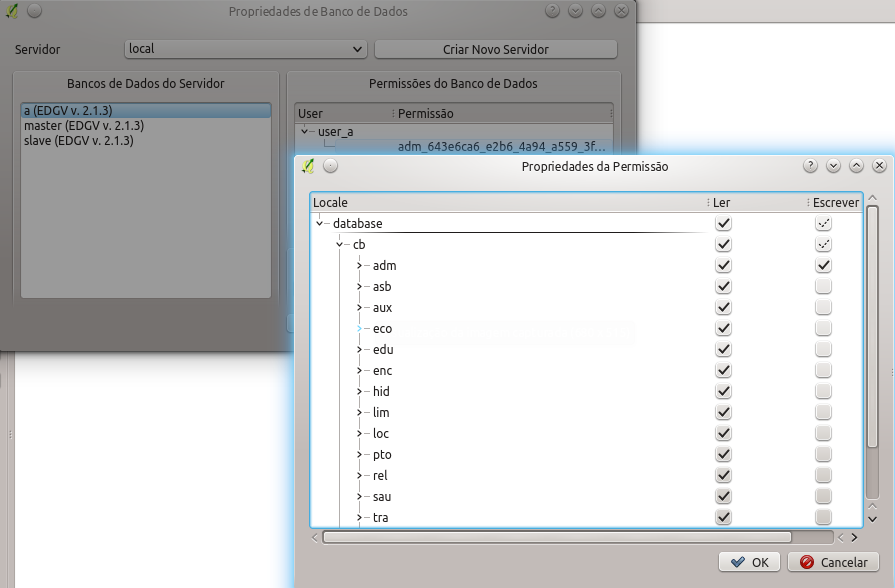

Um administrador de bancos de dados pode desejar verificar informações de bancos de dados EDGV criados pelo DsgTools. O Explorar Servidor permite que seja possível verificar quais modelos de permissões estão instalados nos bancos de dados, permite verificar os detalhes de cada permissão e ainda permite que sejam apagados os bancos de dados.
A janela a seguir mostra o estado inicial da ferramenta.

Para utilizar basta ao administrador selecionar um servidor (vide figura abaixo) e entrar com as credenciais caso necessário. Caso não sejam fornecidas, ou usadas, credenciais de usuário administrador, não é possível utilizar a ferramenta. Isso é foi feito para aumentar a segurança e integridade dos bancos de dados EDGV criados pelo DsgTools.

Abaixo é possível ver a solicitação de credenciais de acesso caso não haja informação disso já guardada no servidor.

Abaixo é possível ver todos os bancos criados pelo DsgTools para um dado servidor. Clicando em um dos bancos listados é possível ver quais usuários tem acesso ao banco em questão. Também é possível ver quais as permissões de acesso do usuário em questão inspecionando a permissão a ele atribuida.

Para se inspecionar uma permissão atribuida a um usuário deve-se clicar com o botão direito na permissão desejada.

Abaixo pode-se ver os detalhes de uma permissão atribuida ao usuário selecionado.

Também é facultado ao administrador apagar bancos de dados que não sejam mais necessários. Para isso basta selecionar o o banco que se deseja apagar e clicar em Apagar Banco de Dados e confirmar a sua escolha. Caso não haja problemas, como outros usuários acessando o banco, uma mensagem de sucesso irá aparecer.